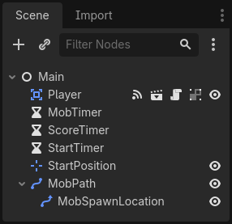

Scene game chính
Giờ là lúc kết hợp mọi thứ chúng ta đã làm thành một scene game có thể chơi được.
Tạo một scene mới và thêm một Node tên Main. (Lý do chúng ta dùng Node thay vì Node2D là vì node này sẽ là vật chứa để xử lý logic game. Bản thân nó không cần chức năng 2D.)
Nhấp nút Instance (có biểu tượng mắt xích) và chọn file player.tscn bạn đã lưu.

Bây giờ, thêm các node sau làm node con của Main và đặt tên như dưới đây:
Timer (đặt tên
MobTimer) - để điều khiển tần suất xuất hiện của mobTimer (đặt tên
ScoreTimer) - để tăng điểm mỗi giâyTimer (đặt tên
StartTimer) - để tạo độ trễ trước khi bắt đầuMarker2D (đặt tên
StartPosition) - để chỉ định vị trí bắt đầu của người chơi
Đặt thuộc tính Wait Time của từng node Timer như sau (giá trị tính bằng giây):
MobTimer:0.5ScoreTimer:1StartTimer:2
Ngoài ra, đặt thuộc tính One Shot của StartTimer thành "On" và đặt Position của node StartPosition thành (240, 450).
Tạo mob
Node Main sẽ sinh ra kẻ địch mới, và chúng ta muốn chúng xuất hiện ở vị trí ngẫu nhiên trên cạnh màn hình. Nhấp vào node Main trong Scene dock, sau đó thêm một node con Path2D tên MobPath. Khi chọn Path2D, bạn sẽ thấy một số nút mới ở đầu trình chỉnh sửa:

Chọn nút ở giữa ("Add Point") và vẽ đường đi bằng cách nhấn để thêm các điểm tại những góc như hình. Để các điểm bám vào lưới, hãy đảm bảo cả "Use Grid Snap" và "Use Smart Snap" đều được chọn. Các tùy chọn này nằm bên trái nút "Lock", lần lượt có biểu tượng nam châm cạnh một vài dấu chấm và các đường giao nhau.

Quan trọng
Hãy vẽ đường đi theo chiều kim đồng hồ, nếu không mob sẽ xuất hiện hướng ra ngoài thay vì vào trong!

Sau khi đặt điểm 4 trong hình, nhấn nút "Close Curve" và đường cong của bạn sẽ hoàn tất.
Giờ đường dẫn đã được định nghĩa, thêm một node PathFollow2D làm con của MobPath và đặt tên MobSpawnLocation. Node này sẽ tự động xoay và đi theo đường dẫn khi di chuyển, nên chúng ta có thể dùng nó để chọn vị trí và hướng ngẫu nhiên dọc theo đường dẫn.
Scene của bạn sẽ trông như sau:

Script Main
Thêm script vào Main. Ở đầu script, chúng ta dùng @export var mob_scene: PackedScene để có thể chọn scene Mob mà chúng ta muốn tạo instance.
extends Node
@export var mob_scene: PackedScene
var score
using Godot;
public partial class Main : Node
{
// Don't forget to rebuild the project so the editor knows about the new export variable.
[Export]
public PackedScene MobScene { get; set; }
private int _score;
}
Nhấn vào node Main và bạn sẽ thấy thuộc tính Mob Scene trong Inspector, bên dưới "Main.gd".
Bạn có thể gán giá trị cho thuộc tính này theo hai cách:
Kéo
mob.tscntừ dock "FileSystem" và thả vào thuộc tính Mob Scene.Nhấn mũi tên xuống bên cạnh "[empty]" và chọn "Load". Chọn
mob.tscn.
Tiếp theo, chọn instance của scene Player bên dưới node Main trong Scene dock, và mở Signals dock ở thanh bên.
Bạn sẽ thấy danh sách signal của node Player. Tìm và nhấp đúp vào signal hit trong danh sách (hoặc nhấp chuột phải và chọn "Connect..."). Thao tác này sẽ mở hộp thoại kết nối signal. Chúng ta muốn tạo một hàm mới tên game_over, hàm này sẽ xử lý những gì cần xảy ra khi game kết thúc. Gõ "game_over" vào ô "Receiver Method" ở cuối hộp thoại kết nối signal và nhấp "Connect". Mục tiêu của bạn là signal hit được phát ra từ Player và được xử lý trong script Main. Thêm đoạn mã sau vào hàm mới, cùng với hàm new_game để thiết lập mọi thứ cho một game mới:
func game_over():
$ScoreTimer.stop()
$MobTimer.stop()
func new_game():
score = 0
$Player.start($StartPosition.position)
$StartTimer.start()
public void GameOver()
{
GetNode<Timer>("MobTimer").Stop();
GetNode<Timer>("ScoreTimer").Stop();
}
public void NewGame()
{
_score = 0;
var player = GetNode<Player>("Player");
var startPosition = GetNode<Marker2D>("StartPosition");
player.Start(startPosition.Position);
GetNode<Timer>("StartTimer").Start();
}
Giờ chúng ta sẽ kết nối signal timeout() của mỗi node Timer (StartTimer, ScoreTimer và MobTimer) với script main. Với mỗi timer trong ba timer, chọn timer đó trong Scene dock, mở tab Signals của Node dock, rồi nhấp đúp vào signal timeout() trong danh sách. Thao tác này sẽ mở một hộp thoại kết nối signal mới. Cài đặt mặc định trong hộp thoại này đều ổn, nên hãy chọn Connect để tạo kết nối signal mới.
Sau khi cả ba timer đều được thiết lập như vậy, bạn sẽ thấy mỗi timer có một kết nối Signal cho signal timeout() tương ứng, hiển thị màu xanh lá, trong tab Signals của từng timer:
(Với MobTimer):
_on_mob_timer_timeout()(Với ScoreTimer):
_on_score_timer_timeout()(Với StartTimer):
_on_start_timer_timeout()
Giờ chúng ta định nghĩa cách mỗi timer hoạt động bằng cách thêm đoạn mã bên dưới. Lưu ý rằng StartTimer sẽ khởi động hai timer còn lại, và ScoreTimer sẽ tăng điểm thêm 1.
func _on_score_timer_timeout():
score += 1
func _on_start_timer_timeout():
$MobTimer.start()
$ScoreTimer.start()
// We also specified this function name in PascalCase in the editor's connection window.
private void OnScoreTimerTimeout()
{
_score++;
}
// We also specified this function name in PascalCase in the editor's connection window.
private void OnStartTimerTimeout()
{
GetNode<Timer>("MobTimer").Start();
GetNode<Timer>("ScoreTimer").Start();
}
Trong _on_mob_timer_timeout(), chúng ta sẽ tạo một instance mob, chọn một vị trí bắt đầu ngẫu nhiên dọc theo Path2D và cho mob chuyển động. Node PathFollow2D sẽ tự động xoay khi đi theo đường đi, vì vậy ta sẽ dùng nó để chọn cả hướng lẫn vị trí của mob. Khi tạo mob, ta sẽ chọn một giá trị ngẫu nhiên trong khoảng 150.0 đến 250.0 cho tốc độ di chuyển của mỗi mob (sẽ rất nhàm chán nếu tất cả đều di chuyển cùng tốc độ).
Lưu ý rằng một instance mới phải được thêm vào scene bằng add_child().
func _on_mob_timer_timeout():
# Create a new instance of the Mob scene.
var mob = mob_scene.instantiate()
# Choose a random location on Path2D.
var mob_spawn_location = $MobPath/MobSpawnLocation
mob_spawn_location.progress_ratio = randf()
# Set the mob's position to the random location.
mob.position = mob_spawn_location.position
# Set the mob's direction perpendicular to the path direction.
var direction = mob_spawn_location.rotation + PI / 2
# Add some randomness to the direction.
direction += randf_range(-PI / 4, PI / 4)
mob.rotation = direction
# Choose the velocity for the mob.
var velocity = Vector2(randf_range(150.0, 250.0), 0.0)
mob.linear_velocity = velocity.rotated(direction)
# Spawn the mob by adding it to the Main scene.
add_child(mob)
// We also specified this function name in PascalCase in the editor's connection window.
private void OnMobTimerTimeout()
{
// Create a new instance of the Mob scene.
Mob mob = MobScene.Instantiate<Mob>();
// Choose a random location on Path2D.
var mobSpawnLocation = GetNode<PathFollow2D>("MobPath/MobSpawnLocation");
mobSpawnLocation.ProgressRatio = GD.Randf();
// Set the mob's direction perpendicular to the path direction.
float direction = mobSpawnLocation.Rotation + Mathf.Pi / 2;
// Set the mob's position to a random location.
mob.Position = mobSpawnLocation.Position;
// Add some randomness to the direction.
direction += (float)GD.RandRange(-Mathf.Pi / 4, Mathf.Pi / 4);
mob.Rotation = direction;
// Choose the velocity.
var velocity = new Vector2((float)GD.RandRange(150.0, 250.0), 0);
mob.LinearVelocity = velocity.Rotated(direction);
// Spawn the mob by adding it to the Main scene.
AddChild(mob);
}
Quan trọng
Tại sao lại là PI? Trong các hàm cần góc, Godot dùng radian, không phải độ. Pi biểu diễn nửa vòng quay tính bằng radian, khoảng 3.1415 (ngoài ra còn có TAU bằng 2 * PI). Nếu bạn quen làm việc với độ hơn, bạn sẽ cần dùng các hàm deg_to_rad() và rad_to_deg() để chuyển đổi giữa hai đơn vị.
Kiểm thử scene
Hãy kiểm thử scene để chắc chắn mọi thứ hoạt động. Thêm lời gọi new_game này vào _ready():
func _ready():
new_game()
public override void _Ready()
{
NewGame();
}
Chúng ta cũng sẽ gán Main làm "Main Scene" - scene tự động chạy khi game khởi động. Nhấn nút "Play" và chọn main.tscn khi được hỏi.
Mẹo
Nếu bạn đã đặt một scene khác làm "Main Scene", bạn có thể nhấp chuột phải vào main.tscn trong FileSystem dock và chọn "Set As Main Scene".
Bạn sẽ có thể di chuyển người chơi, thấy các mob xuất hiện, và thấy người chơi biến mất khi bị mob đâm trúng.
Khi bạn chắc chắn mọi thứ đã hoạt động, hãy xóa lời gọi new_game() khỏi _ready() và thay bằng pass.
Game của chúng ta còn thiếu gì? Một chút giao diện người dùng. Trong bài tiếp theo, chúng ta sẽ thêm màn hình tiêu đề và hiển thị điểm của người chơi.